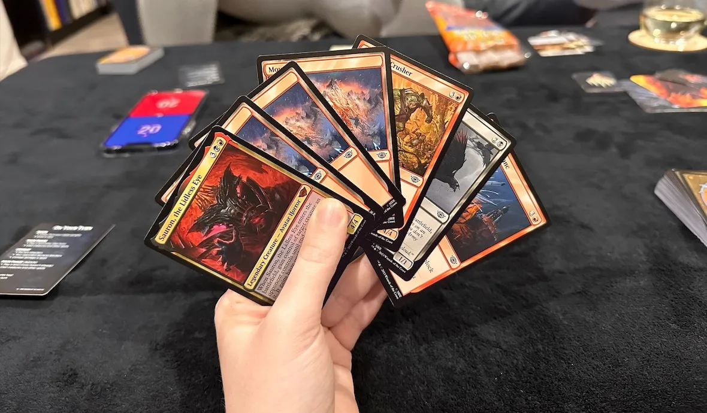

Let's Learn Magic: The Gathering
Your Deck is Your Tool
Building a Deck
\
Your deck is your toolbox of spells and creatures. A standard deck has a minimum of 60 cards – you can have a maximum of four copies of any single card (except for basic lands).
It's easiest to start by focusing on one or two colors of mana and building a deck with a clear theme (like a creature rush, or lots of spellcasting).
Card Types
Lands: These are your mana sources. You'll need lands to cast almost every other card.
Creatures: Your creatures are both your attackers and defenders. They are defined by their power (how much damage they deal) and toughness (how much damage they can take).
Sorceries: These potent spells have a one-time effect and then go to your graveyard (discard pile).
Instants: These spells can be played in response to other spells or on your opponent's turn, offering flexibility.
Enchantments: These stay on the battlefield, offering long-term benefits or effects.
Artifacts: These represent magical equipment and other objects, and usually stay in play.
Planerswalkers: These powerful cards represent allies you can summon to the battlefield. Each has unique abilities and a loyalty counter total (like their own life total).
Battles: These are a very rare card type found on only a small subset of cards, usually depicting epic events with special rules.
Sagas: These are a special type of enchantment. They have "chapters" that trigger effects each turn as you add lore counters. After the final chapter, the Saga is sacrificed.
How a Game of Magic Works
Game Goal
You and your opponent each start with 20 life. Your goal is to reduce your opponent's life to zero before they do the same to you.
The Turn, In Order
Untap: Untap any cards you used ("tapped") on your last turn.
Upkeep: Some cards have special effects that happen during upkeep.
Draw: Take the top card of your deck into your hand.
Main Phase 1: Your main time to play lands, creatures, and spells.
Combat: Declare your attackers, your opponent chooses blockers, and damage is dealt.
Main Phase 2: Chance to play additional cards if you didn't before combat.
End Step: A brief cleanup phase, and then your opponent's turn begins!
Example Game
Example Turns
Turn 1(You): Play a Forest land.
Turn 1(Opponent): Play a Swamp land.
Turn 2(You): Play another Forest, then cast a Grizzly Bears
 creature(a 2/2 creature).
creature(a 2/2 creature).Turn 2(Opponent): Plays a Mountain land and casts a Goblin Arsonist creature(a 1/1 creature).
Turn 3(You): Play a Plains land and cast a Revitalize spell(Gain 3 life and draw a card).
Turn 3(Opponent): Attacks with the Goblin Arsonist. You choose not to block. (Your life total goes down to 22).
Turn 4(You): Play a Mountain land, and cast a Shock spell, dealing 2 damage to the Goblin Arsonist, destroying it.
Turn 4(Opponent): Plays a Swamp.
Explanations
Turns often begin by playing a land to increase your mana resources.
Creates can attack your opponents directly, unless they have creatures to block.
Spells give you a wide range of effects, from gaining life to removing your opponent's creatures.
Keep Exploring and Have Fun!
Start Simple, and Learn as You Go: Don't try to learn everything at once. Begin with the basics, and you'll naturally discover exciting new cards and strategies as you play.
Find Your Community: Local game stores often have beginner-friendly events. This is a great way to meet other players and learn in a welcoming environment.
Embrace the Journey: Magic is huge! It's meant to be discovered over time. Enjoy the process of building your decks, learning new cards, and making new friends in this awesome game.
Play Online: Magic: The Gathering Arena is a fantastic way to play MTG for free, learn the rules at your own pace, and practice against other players. You can find it on Android, iOS, and Steam.